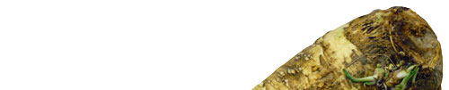
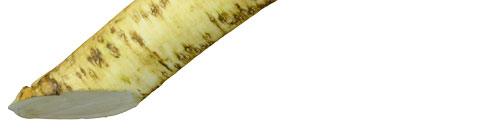

Хрен — многолетнее растение с толстым мясистым корнем. Стебель прямостоячий, голый, ветвистый, высотой 50-150 см. Прикорневые листья очень крупные, продолговато-овальные; стеблевые - перистораздельные. Цветки белые, собраны в кистевидное соцветие. Плод - продолговато-яйцевидный стручок. Цветет в мае - июне. Плоды созревают в августе.Хрен был известен египтянам и древним грекам, называвшим его аrтоrасеа. Слово вошло в латинский язык и стало родовым ботаническим названием растения. В Средние века растение в диком виде встречалось и на Севере Европы, и на Британских островах. Уже в начале XVI века хрен хорошо знали в Скандинавии, где его название традиционно связывали с перечно-жгу-чим вкусом, на что указывает финское piparjuuri, шведское pepparrot и норвежское pepperrot - все это означает "перечный корень". Хрен издавна был знаком всем славянским народам, о чем говорит общий корень слова практически во всех славянских языках: болгарском - хрян, словенском - hren, чешском - kren, польском - chrzan и украинском - хрiн. Славянское хрен позже вошло и в некоторые западноевропейские языки, например, в ав-. стрийское Кrеп (позже ставшее и одним из немецких названий) и даже в одно из региональных итальянских названий - сrеn
В России хрен в качестве лекарственного растения выращивают примерно с IX века, а как приправу стали использовать чуть позже. В словаре Даля приводится старое слово "хреновник" - так на Руси когда-то называли лепешку из тертого хрена с уксусом, прикладываемую к телу вместо горчичника. В более современном словаре Ушакова слово "хреновник" определяется как место, где растет хрен; там же приводятся еще два забавных термина: "хренина" - корень хрена, и "хреновина" - большой корень хрена (вспомним Хвостенко: "...за ними подполковники идут, хреновину несут")... Короче говоря, "хреновина" у нас хорошо прижилась, и уже Вильям Похлебкин пишет в одном из своих трудов:
"Главной русской холодной приправой следует считать хрен, употребляемый ко всем холодным и отварным видам рыбных блюд (заливное, тельное, отварная целиковая рыба, красная рыба горячего копчения (севрюга), отварная осетрина, а также к рыбным пирогам и кулебякам, которые принято также заедать хреном - в случае, когда они употреблялись холодными, па другой день, а не с пылу с жару... По-русски хрен всегда готовили без уксуса, который "убивает силу хрена" и сообщает ему свой привкус и остроту, не свойственную национальным русским блюдам... Хрен на уксусной основе, или так называемый хрен по-польски, готовили в Белоруссии, на Волыни и, главным образом, в Литве Этот вид приправы из хрена не даст блюдам специфического "русского вкуса", но с исчезновением домашнего приготовления он стал все более заменять собой традиционную русскую приправу, характерной чертой которой был чрезвычайно мягкий, нежный вкус, наряду с чрезвычайно сильным и неожиданным, доводящим до слез, едким "шибанием", составляющим самую большую прелесть этой русской приправы, поскольку только такой хрен играл в национальном застолье свою традиционную роль, с одной стороны, чисто кулинарную, делал блюда особо пикантными, а с другой стороны, и специфически застольную, развлекательную, так как всегда давал повод к шуткам и веселью за столом, к ироническим замечаниям по поводу новичков или неуклюжих, не тонких, неумелых людей, которые не знали или не понимали, не усваивали все искусство пользования хреном как приправой, не схватывали, в чем состоял секрет этого пользования. Между тем, секрет этот был чрезвычайно прост: надо было употреблять хрен только после того, как откусывался и лишь слегка прожевывался (но не проглатывался!) очередной кусок рыбы или мяса. В таких случаях некоторые "ловкачи" при известной сноровке могли употреблять сравнительно большие порции хрена вполне безопасно, в то время как их менее опытные сотрапезники порой подскакивали на своих местах и заливались слезами (под оглушительный хохот всех присутствующих) от самых незначительных, даже малюсеньких доз, употребленных без знания специфики и традиций Такие люди всегда распознавались как не имеющие домашнего очага или крепких семейных корней. Отсюда и один из старых русских обычаев - испытание жениха и невесты - состоящий в угощении их такими блюдами, где употребление хрена было обязательным. При этом неумеха часто полу чал полный отказ, даже если он имел иные положительные качества.
Текст не нуждается в комментариях... Однако не стоит думать, что "Россия - родина хренов". Наиболее широкое распространение первоначально хрен получил в Германии и Австрии, где к рыбе и мясу его подавали в самых невероятных сочетаниях. Например, в традиционный немецкий рецепт рождественского карпа и сегодня входят сливки, тертый миндаль, сахар и хрен, а в Австрии на Пасху обычно принято подавать ветчину с хреном, приправленным кислыми тертыми яблоками и лимонным соком - такую приправу австрийцы называют Apfelkren (яблочный хрен). Ветчина с яблочным хреном - одно из традиционных блюд австрийского рождественского стола. В Чехии, входящей когда-то в Австро-Венгрию, готовят свой вариант яблочного хрена - заливают натертый корень крепким мясным бульоном и добавляют к нему тертые яблоки, уксус и сахар.
Немецкие переселенцы завезли хрен в Северную Америку - одно время американцы даже называли его German mustard (немецкая горчица). Сегодня эта довольно популярная в США приправа входит в соусы для жаренных на углях колбасок и гамбургеров (то есть опять же изделий немецкого происхождения). Для приготовления подобного соуса густые сливки смешивают с лимонным соком, майонезом, сухой горчицей, тертым хреном и 2-3 часа выдерживают в холодильнике. В более сложном варианте соуса в майонез добавляют не только хрен, но и шинкованный зеленый лук, вустерский соус, соус чили, кетчуп, лимонный сок... Существует вид гамбургера, когда тертый хрен кладут в мясной фарш примерно в такой пропорции: на 500 г говядины 2 столовые ложки тертого хрена и 1 чайная ложка толченого чеснока.
Издавна известен хрен и в Англии (в письменных английских источниках он появился примерно в 1590 году), однако применяли его больше в медицинских целях как средство против лихорадки и выведения камней из желчных протоков. Как приправу (причем немецкую) его приняли значительно позже - только полтора-два столетия спустя. Английское horseradish (буквально: "конский корень"), скорее всего, связано с неправильной интерпретацией немецкого Meerrettich ("морской корень" - так в Германии когда-то называли хрен). Считают, что это слово было воспринято на Британских островах как mare radish (таrе по-английски "кобыла"), откуда совсем недалеко и до horse (лошадь, конь). Англичане осторожно стали добавлять хрен сначала в маринады и соусы, а также подавать к жирным сортам рыбы (а не к мясу), например, к макрели и копченой сельди. Такое сочетание хорошо отбивает привкус рыбьего жира - до сих пор, например, датчане едят жирного палтуса под соусом из хрена. Кстати, подобная практика была распространена и в России, где жирную рыбу часто подавали с хреном, о чем упоминает Гиляровский: "Гости сидели в шубах и наскоро ели блины, холодную белужину или осетрину с хреном и красным уксусом".
А вот ростбиф с хреном (roast beef and horseradish sauce), считающийся традиционным английским блюдом, на самом деле появился сравнительно недавно. И хрен здесь явно играет не последнюю роль, облагораживая унылый кусок мяса и придавая аскетичной пище британцев некую жизнеутверждающую ноту. Не верите? Перечитайте "Письма русского путешественника" Н. М. Карамзина: "Ростбиф, бифштекс есть их обыкновенная пища. От того густеет в них кровь; от того делаются они флегматиками, меланхоликами, несносными для самих себя, и не редко самоубийцами". Вспоминайте иногда классиков, особенно когда собираетесь угостить гостей куском жареного мяса, но ленитесь приготовить подобающий случаю "хреновый" (ударение, естественно, на первом слоге) соус. И помните, что лучше использовать хрен в соусах, требующих тепловой обработки (например, во французский соус Albert), - в этом случае ядреный корень теряет большую часть своей жгучести и не доминирует над остальными компонентами.
Для приготовления широко известной приправы корень обычно трут на мелкой терке, доливают немного холодной воды и добавляют для смягчения соль, сахар и лимонный сок (или уксус) вместе с лимонной цедрой (белый хрен), а часто и свекольный сок (красный хрен). Возможны сочетания тертого хрена с чесноком или перцем, что увеличивает остроту приправы, а иногда готовый хрен разводят сметаной, сливками или йогуртом, что, наоборот, смягчает жгучесть. Последний вариант лучше всего подходит к холодному отварному поросенку (старое русское блюдо поросенок под сметанным хреном) или мясному студню, а тертый хрен, смешанный с маринованной брусникой, - прекрасная приправа к пернатой дичи.
В Японии роль хрена исполняет "васаби" - светло-зеленые жгучие ароматные корни травянистого растения вида Eutrema wasabi (или Wasabia japonica) семейства крестоцветных (капустных). На многих языках васаби называют "японским хреном": американцы - Japanese horseradish, французы - raifort du Japon, немцы Japanischer Kren и даже шведы - Japansk pepparrot. Действительно, как и корни обычного хрена, свежие корни васаби натирают и используют ярко-зеленую насту как жгучую приправу, а высушенные размалывают в бледно-зеленый порошок - он идет на приготовление соусов к традиционным японским блюдам "суси", "сасими" и "темпура". Кстати, в высушенном корне совсем не ощущается острый вкус (только горечь) - он проявляет жгучие свойства только, если его замочить на несколько минут в воде. Кроме того, васаби добавляют в некоторые версии японского соевого соуса.
Хрен культивируется как однолетник или двулетник. В хороших условиях корни за одно лето становятся годными для использования. К теплу нетребователен, хорошо растет даже в Заполярье. Лучше выращивать хрен на легкой влажной почве, обязательно глубокой и сильно удобренной. К освещению малотребователен и может расти при легком затенении.
Размножают кусками корней (корневыми черенками), которые заготавливают осенью из отходов, остающихся при копке корней, и сохраняют в подвалах до весны, весной удаляют с черенков боковые корни и сажают их наклонно под углом 30°; ширина междурядий 80 см, расстояние между растениями в ряду 30 см. В середине лета корень обнажают и обрезают все боковые корешки и почки, оставляя лишь самые нижние. Копают осенью в год посадки или осенью следующего года; товарный хрен должен иметь 25- 40 см дл. и 1,5-3 см толщ.
Корень хрена обладает острым, колючим запахом. Вкус его сначала сладковатый, позднее острый и жгучий. Употребляется в нарезанном или тертом виде к квашеной капусте, при мариновании и солении огурцов, красной свеклы. Широко используется в пищевой и консервной промышленности. Остроту хрена можно уменьшить, добавляя сметану и яблоки.
Подается к жареному мясу, сосискам, бифштексу по-татарски, копченому мясу, ветчине, жирной свинине, вареной говядине, языку и ростбифу. Добавляется в различные майонезы, творог, йогурт, квашеную капусту, огурцы и в другие овощи. Эти смеси подают к жареному и вареному мясу, рыбе, к мясу, жаренному в гриле, к холодным закускам. Смесь тертого хрена со сметаной или же с яблоками, с водой или вином служит хорошей приправой к рыбе, особенно к карпу, треске, угрю и лососю. Вкус хрена можно улучшить, добавив в него сахар и лимонный сок.
В народной медицине хрен применяли как средство, повышающее аппетит, для улучшения деятельности пищеварительного тракта, при отеках, болезнях почек, мочевого пузыря и печени, как отхаркивающее при воспалении верхних дыхательных путей, При цинге, склонности к кровотечениям, физическом и умственном истощении, малярии употребляли настойку корней хрена внутрь, а кашицу в виде компресса как местное раздражающее и отвлекающее средство (несколько слабее горчицы), использовали наружно при радикулите, подагре, ревматизме, а также для лечения гнойных ран.
В хрене содержатся витамины, эфирные масла, минеральные вещества, фитонциды и фермент лизоцим, способный быстро растворять бактерии. Не пренебрегайте хреном! Вполне доступный корешок необыкновенно полезен и прекрасно помогает и от простуды, и от радикулита, и от кариеса (японцы работают над созданием "хреновой" зубной пасты), и даже от похмелья. Ну просто незаменимая приправа! Недаром Ша-херизада в одной из своих сказок пугает шаха: "И вздорожает пшеница, от месяца Берму да до Мисра.., и вздорожают хрен и лук...". И эхом вторят ей наши российские мудрецы: "Хрен да лук не выпускай из рук..." Но и это еще не все. Перефразируя известную пословицу, можно сказать: "Что русскому здорово, то зулусу - смерть". Как сообщило недавно агентство ИТАР-ТАСС, народы зулу на юге Африки используют наш родной хрен как яд, натирая им наконечники стрел (видимо, не знают "темные зулусы" , что лучшее противоядие хрену - жареный молочный поросенок и водка). Английские ученые, изучая это "отравляющее вещество", случайно выделили из него молекулу, способную разбивать раковые клетки на отдельные фрагменты, и даже создали опытную антираковую вакцину. Так у скромного корня появилось еще одно полезное свойство, и, возможно, рождение какого-нибудь патентованного "сунерхренолина" не за горами.
Жгучий вкус хрена обусловлен эфирным маслом - аллилэфиром изотиоциановои кислоты, который возникает в результате разложения гликози-да синигрина. Из натертого хрена выделяется горчичное масло, аллилизотиоцианат, который обладает отчетливым антимикробным действием. В хрене содержится значительное количество витамина С, он содержит также сахара, ферменты, аспарагин, аргинин и глютамин.
Хрен хорошо подходит не только к рыбным и мясным блюдам, но и придает пикантную остро ту овощам: огурцам, свекле, латуку и свежей капусте.
Попробуйте нарезать сельдерей, добавить огурцы, тертый хрен и залить сметаной - получи те превосходный освежающий салат.
Имейте в виду, что корень быстро высыхает, поэтому, прежде чем чистить и натирать, выдержите его в холодной воде 5-6 часов.
Хрен легко натереть, если оставить его на ночь в холодной воде.
Хрен не обязательно измельчать на терке. Можно мелко на резать и пропустить через мясорубку.
Корни хрена можно потереть на мелкой терке, высушить и хранить в герметически закупоренной посуде в сухом месте. Перед употреблением порошок разбавляют водой, подкисленной уксусом или лимонной кислотой.
Чтобы натертый хрен не потемнел, его следует сбрызнуть лимоном или уксусом.
Листья хрена придают пикантность соленьям.